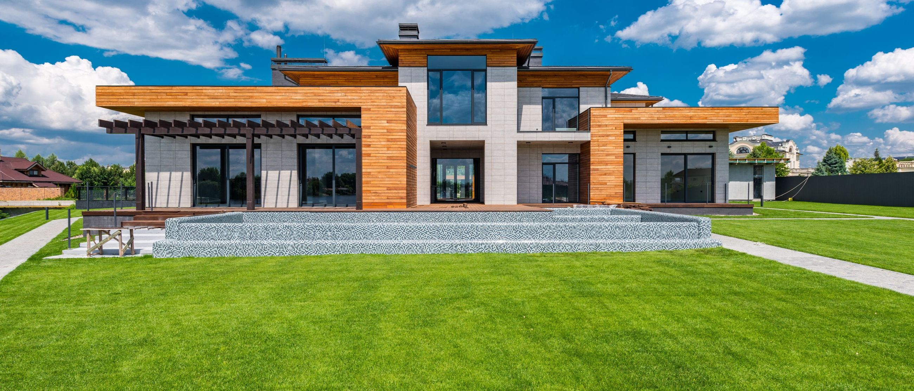
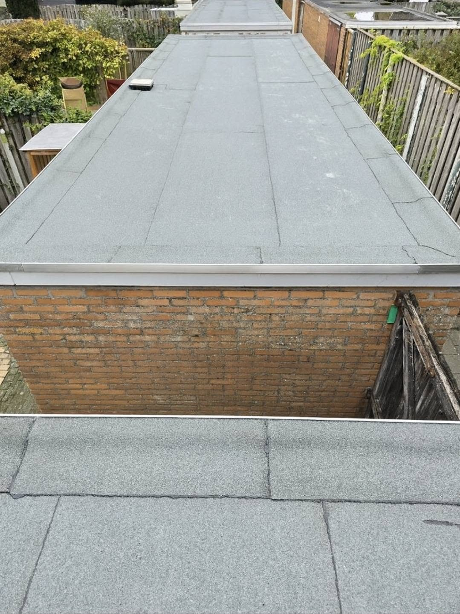
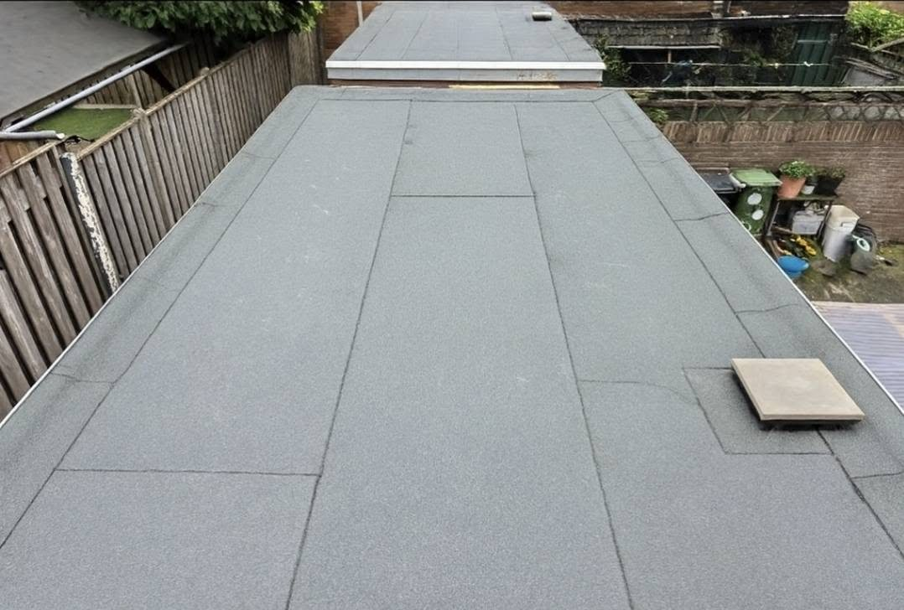
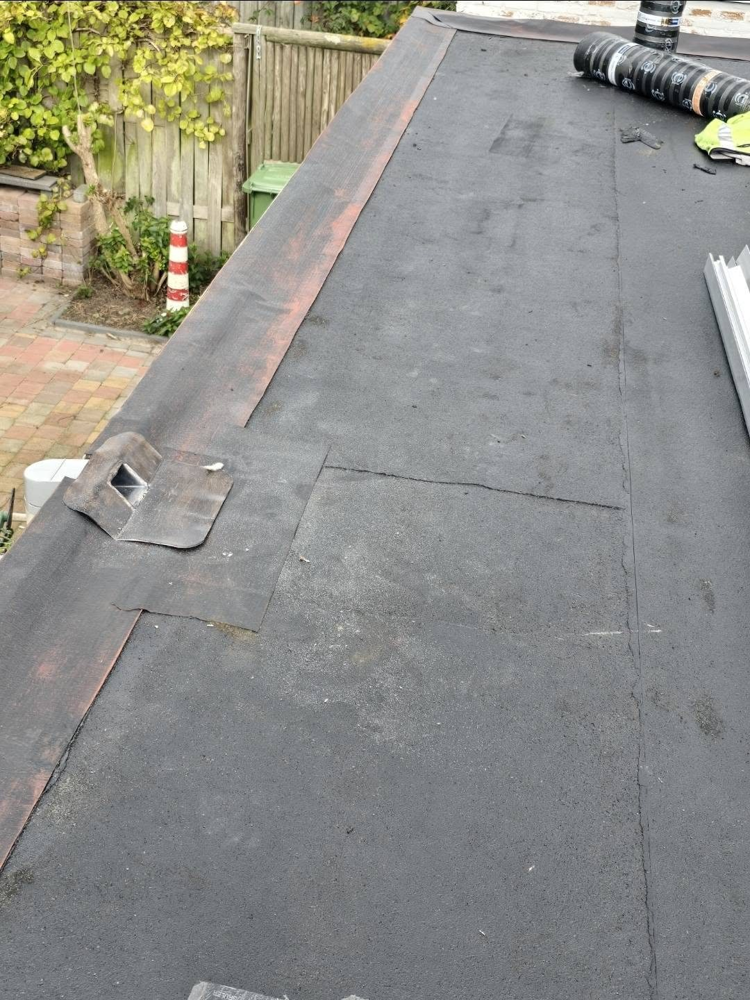
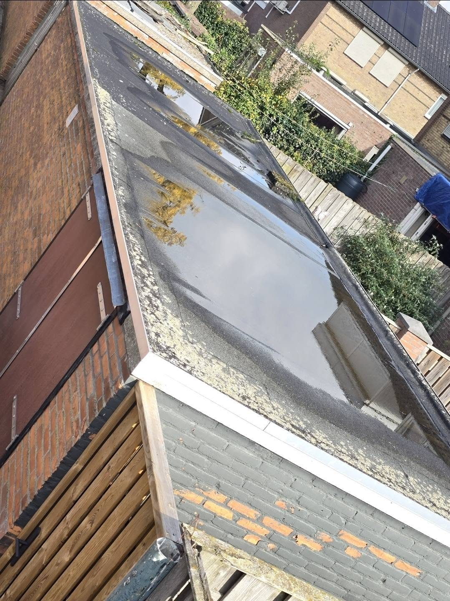
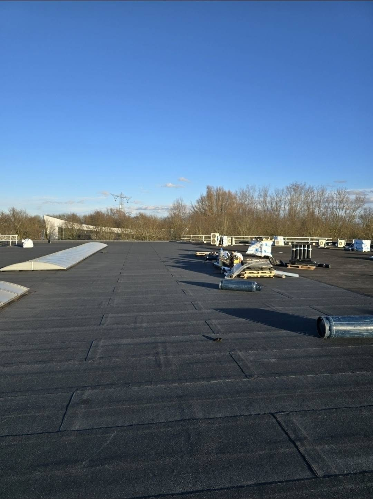
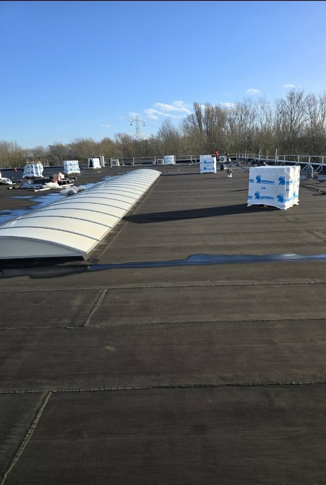
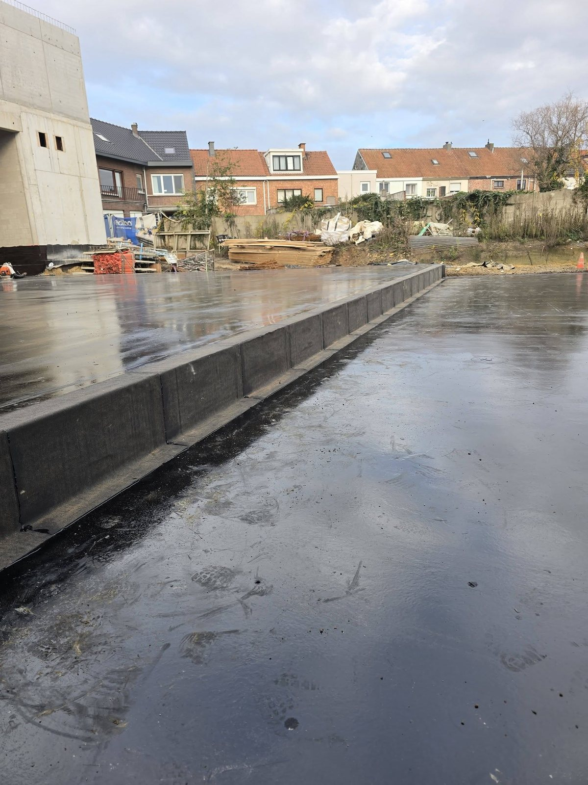
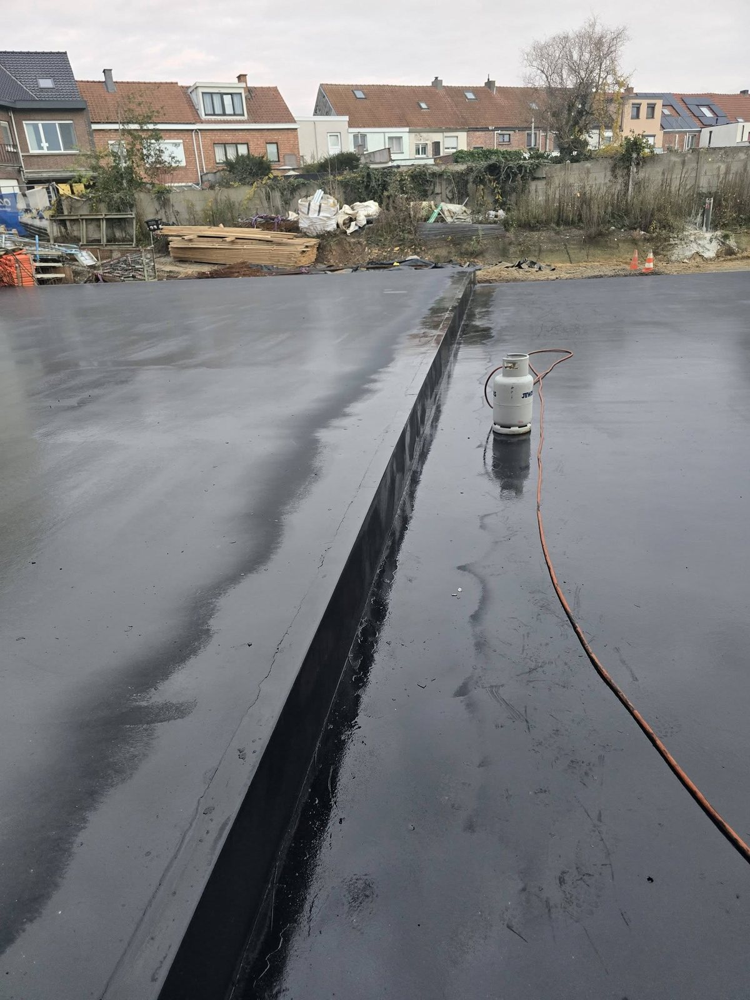
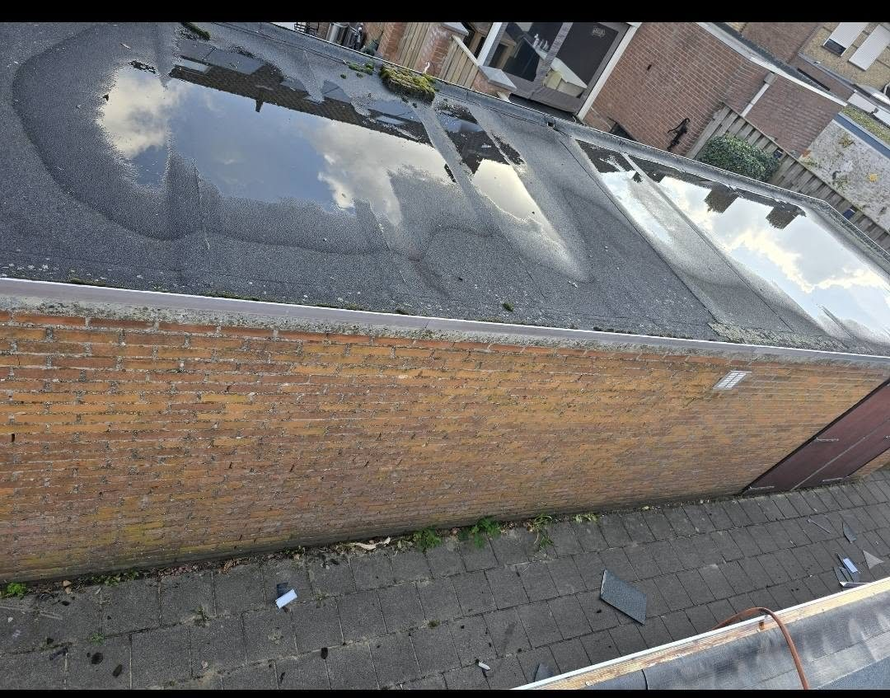

Galeria prac
Zdjęcia prosto z połaci
Kadry robione na budowie, w trakcie i po zakończeniu robót. Widać na nich to, po czym ocenia się dekarza dachów płaskich: zakłady, obróbki i miejsca przy krawędzi.
Na co patrzeć
Dach płaski ocenia się przy krawędziach
Środek połaci wychodzi dobrze prawie każdemu. O szczelności decyduje to, co dzieje się przy attyce, wpuście i przy przejściu pokrycia na ścianę. Te miejsca celowo pokazujemy z bliska.













Skąd te zdjęcia
Prace z placów, na których byliśmy
Galeria rośnie razem z kolejnymi zleceniami. Bieżące kadry trafiają najpierw na profile firmy, a stamtąd tutaj.
Chcesz zobaczyć coś podobnego u siebie
Powiedz, jaki masz dach i czego oczekujesz. Umówimy oględziny i dobierzemy rozwiązanie do stanu połaci.